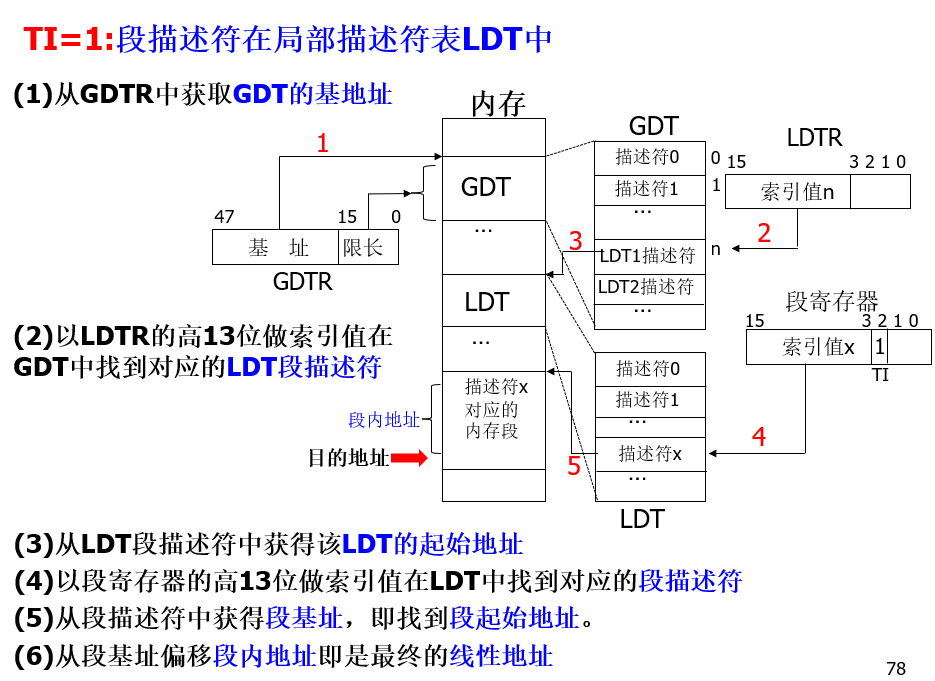

8086与IA32微处理器
本文最后更新于：January 1, 2023 pm
8086与IA32微处理器
8086/8088微处理器
8086微处理器是Intel公司在1978年发表的第一款16位微处理器，在随后的1979年又推出了低成本版本的8088微处理器。
其具有以下特点:
- 采用并行流水线工作方式
将CPU划分为两个功能部分(执行单元EU和总线接口单元BIU)并设置指令预取队列，实现流水线工作方式。 - 对内存空间进行分段管理
将内存分为多个段，并设置了4个段寄存器 - 支持多处理器系统
可以包含主处理器和协处理器
主要引线功能
8086和8088均有40个引脚，其中8086数据线为16条，而8088数据线为8条。
8086与8088共同的控制与状态信号线:
- : 写信号
- : 读信号
- : 有效时表示数据总线是数据有效，允许读写
- : 数据收发器传送方向控制，为1时由CPU向其他部件传送，否则反之。
- ALE: 地址锁存信号，为1时表示地址线上地址有效。一般用它将地址锁存到一个锁存器中。
- READY: 外部同步控制输入信号，微处理器与内存/外设之间在一个总线周期内的时钟配合信号，当CPU给出读信号或写信号后由内存/外设返回。
- INTR: (interrupt request)可屏蔽的中断请求信号。
- NMI: (not masked interrupt)不可屏蔽的中断请求信号。
- : (interrupt answer)中断响应信号。
- : 工作模式选择信号。
- RESET: 复位信号，当其为高时将完成CPU内部复位。复位后CPU内部寄存器的值如下表。
| 内部寄存器 | 内容 | 内部寄存器 | 内容 |
|---|---|---|---|
| CS | FFFFH | IP | 0000H |
| DS | 0000H | FALGS | 0000H |
| SS | 0000H | 其余寄存器 | 0000H |
| ES | 0000H | 指令队列 | 空 |
Hint: 表示低有效！
8086
- : 供地址线与数据线复用，做地址线时为单向，做数据线时为双向。
- : 供地址线高4位与状态信号复用。
- : 为1时表示访问内存，否则反之。
8088
- : 供地址线与数据线复用，做地址线时为单向，做数据线时为双向。
- $A_8至A_{15}: 地址线中间8位。
- : 供地址线高4位与状态信号复用。
- : 为1时表示访问IO设备，否则反之。
8086与8088的区别
- 数据总线宽度不同:
- 8086: 16位数据总线
- 8088: 8位数据总线(8088为8086的低成本版本)
- 表示对内存和IO设备的信号不同:
- 8086: ，高有效时访问内存
- 8088: ，高有效时访问IO设备
8086/8088内部结构
可分为两个功能部分: 两部分功能相互独立、控制相互依赖。
- 执行单元EU: 完成指令的执行
- 运算器
- 8个通用寄存器
- 1个标志寄存器
- EU部分的控制电路
- 总线接口单元BIU: 取指令、取数据、完成指令的调度
- 地址加法器
- 4个段寄存器
- 指令指针寄存器IP(计组中的PC)
- 总线控制逻辑
内部寄存器
8086/8088微处理器共有14个16位寄存器，按功能可分为3类:
- 通用寄存器(8个):
- 数据寄存器:
- AX: 累加器，所有的IO指令都通过AX与接口传送信息。相关指令: in指令和out指令
- BX: 在间接寻址中存放基地址(数据段)
- CX: 计数寄存器。用于在循环或串操作指令中存放计数值。相关指令: loop指令
- DX:
- IO端口间接寻址中存放IO端口地址
- 32位乘除法时存放高16位
数据寄存器均可拆分为2个8位寄存器使用，如AX可以分为AH和AL使用。
- 地址指针寄存器:
- SP: 堆栈指针寄存器，其内容为栈顶的偏移地址，栈顶为栈的最小地址
- BP: 基址指针寄存器，常用于在访问内存时存放内存单元(堆栈段)的偏移地址。
- 变址寄存器:
- SI: 源变址寄存器，相关指令: movsb指令默认源地址为esi寄存器(IA32下)
- DI: 目标变址寄存器，相关指令: movsb指令默认目的地址为edi寄存器(IA32下)
- 数据寄存器:
- 段寄存器(4个):
- CS: 代码段寄存器，存放代码段基址
- DS: 数据段寄存器，存放数据段基址
- SS: 堆栈段寄存器，存放堆栈段基址
- ES: 附加段寄存器，存放附加段基址，附加段一般作为数据段的补充
- 控制寄存器(2个):
- FLAGS: 存放运算结果的状态特征和控制CPU的运行。
常用9个标志位:- CF: 进/借位标志
- PF: 低8位奇偶校验位，1的个数为偶数时为1
- AF: 第4位的进/借位标志
- ZF: 零标志位
- SF: 符号位标志位
- OF: 溢出标志位
- TF: 陷阱标志位，也叫跟踪标志位。TF=1时，使CPU处于单步执行指令的工作方式。
- IF: 中断允许标志位,IF=1使CPU可以响应可屏蔽中断请求。
- DF: 方向标志位，在数据串操作时确定操作的方向。
- IP: 指令指针寄存器，其内容为下一条要执行指令的偏移地址。(与计组中PC类似)
- FLAGS: 存放运算结果的状态特征和控制CPU的运行。
工作模式
8086/8088共有2种工作模式:
- 最小模式: 为单处理器模式，控制信号较少，CPU直接输出控制信号到总线。
- 最大模式: 作为主处理器，连接有其他协处理器，需要接总线控制器。
存储器寻址
8086/8088采用字节编址的方式来管理内存空间，定义连续两个字节作为字单元，字单元的地址为较低字节的地址，其存放规则是低8位放在较低地址字节单元，高8位放在较高地址字节单元，即小端方式。
8086/8088地址重定向
8086/8088共有20条地址线，寻址范围为。如前面介绍，8086/8088采用分段的方式来进行内存空间管理，而段寄存器仅有16位，因此8086/8088并不能直接采用段基址+段内偏移地址=物理地址的方式进行寻址。
如上图所示: 段寄存器内16位数据作为高16位地址，低4位补零形成段基址。其他寄存器内16位地址高4位补零形成偏移地址，再通过段基址+段内偏移地址=物理地址得到物理地址。
根据上述算法，段内最大偏移量为字节，每个段的段基址低4位一定为0000B，因此从0地址开始，每16个字节单元称为一个小节，1MB的内存空间最多可以划分为64K个小节。
8086/8088堆栈段使用
堆栈是一个特定的存储区，访问该存储区一般需要按照专门的规则进行操作。其主要用于暂存数据以及在过程调用或处理中断时保存断点信息。
- 栈顶: 栈顶是最后存入信息的存储单元，为栈的所有地址中的最小值。
- 栈底: 栈底为固定的一端，是堆栈存储区的最大地址单元。
- SP始终指向栈顶
- 堆栈段的数据均以字(16位)为存储单元，以小端进行存放。堆栈初始化时SP指向栈底+2单元(16位)，其值就是堆栈的长度。由于SP是16位寄存器，因此堆栈长度小于等于64K字节。
系统总线
系统总线(bus): 是一组导线和相关的控制、驱动电路的集合，它是计算机系统各部件之间传输地址、数据和控制信息的通道。
BUS:
- 地址总线(AB)
- 数据总线(DB)
- 控制总线(CB)
最大总线模式

处于最大模式下的8086/8088可以接其他的协处理器，控制信号更加复杂，因此需要将控制信号位输入给总线控制器来产生控制信号。
最小总线模式
最小模式下8086/8088直接作为单处理器，通过引脚上的端口将控制信号直接输出即可。
最小总线模式时序
总线时序是指CPU上各引脚的信号在时间上的关系。
总线周期: CPU完成一次访问内存(或I/O接口)操作所需要的时间。1个总线周期至少包括4个时钟周期。
如上图所示: 1次访存或IO操作需要4个时钟周期，分别用来进行地址传送和数据传送。当READY信号处于低电平时，说明数据不可用，需要等待，因此插入至少1个TW时钟周期，如果READY信号一直处于低电平状态即数据一直没有准备好则会插入多个TW周期进行等待。
IA-32微处理器
Intel公司将80286之后的80X86 32位微处理器称为IA(Intel Architecture)-32结构。80386是与8086兼容的高性能的32位微处理器。Pentium系列微处理器是与80X86系列微处理器兼容、RISC型超标量结构的32位微处理器。
Hint: IA-32包括80386和奔腾系列。
IA-32微处理器结构
CPU被划分为6个单元:总线接口单元BIU、指令预取单元IPU、指令译码单元IDU、执行单元EU、分段单元SU、分页单元PU。
其主要特点有:
- 具有4GB的物理地址空间和64TB的虚拟地址空间的存储器寻址能力
- 不仅有分段存储管理方式，还增加了分页存储管理方式(段页结合式)
- 多任务运行机制
- 优先级保护机制
内部寄存器
IA32微处理器共有24个寄存器，其中14个32位寄存器，8个16位寄存器，2个48位寄存器，按功能可分为5类:
- 通用寄存器(8个32位)
均为8086/8088的8个通用寄存器32位扩展版本，分别命名为EAX、EBX、ECX、EDX、ESP、EBP、ESI、EDI，功能也与在8086/8088中类似，并且EAX、EBX、ECX、EDX的低16位可拆分为16位和8位寄存器使用，如EAX可拆分为AX或AH与AL使用。 - 段寄存器(6个16位)
IA-32中段基址和偏移量都是32位，段寄存器只有16位不直接作段基址，其内容称为段选择器，需间接访问才能得到段基地址。- CS: 代码段寄存器
- DS: 数据段寄存器
- SS: 堆栈段寄存器
- ES: 附加段寄存器，附加段一般作为数据段的补充
- FS: 动态数据结构段寄存器，也作为数据段的补充
- GS: 共享段寄存器，也作为数据段的补充
- 指令指针和标志寄存器(2个32位):
- EFLAGS: 其中第0⁓11位共有9个标志位，与8086一致。
- EIP: 其低16位与8086同名为IP，作用与IP相同。
- EFLAGS: 其中第0⁓11位共有9个标志位，与8086一致。
- 系统地址寄存器(2个48位，2个16位)
使用方法见保护模式下的存储器访问- 48位寄存器:
- 全局描述符表寄存器GDTR:
- 中断描述符表寄存器IDT:
- 16位寄存器:
- 局部描述符表寄存器LDTR
- 任务状态段寄存器TR
- 48位寄存器:
- 控制寄存器(4个32位)
分别为CR0、CR1、CR2和CR3，其中CR1保留未使用。用来设置和保存机器的各种全局性状态，比如是否有浮点部件，是否处于保护模式，是否采用页式存储管理等等。
工作模式
IA-32有2种主要的工作方式和1种特殊模式:
- 实模式: 实模式是为了与8086兼容而设置的工作方式即使IA32在16位模式下工作。IA-32的30多条地址线中只有低20条地址线起作用，可寻址1MB的物理地址空间。实模式下微处理器不能实现多任务的处理。
- 保护模式: 保护虚地址方式是IA-32微处理器的主要工作方式即32位模式。
- 虚拟86模式: 为了在IA-32系统上运行MS-DOS支持下的应用程序，微处理器可以工作在实地址方式即16位模式，但其功能十分有限。
保护模式下的存储器访问
保护模式下可访问的地址空间达4GB，但不是随意使用，而是要受到一定的限制，这种保护就是由段描述符来完成，拿到段描述符即可重定向到段的物理地址。
段描述符: 段描述符指示了这个段在内存中的位置、大小以及使用限制。段描述符有64位，包括段基址32位、段界限20位、特权级等属性12位。
- 段基址: 32位段基址，表示该段在4GB线性地址空间中的起始地址
- 属性: 12位，包括特权级、段类型、段存在标志、粒度标志等
- 特权级DPL: 每个段都有一个特权级，取值范围0~ 3，0级为最高级，一般用于操作系统核心代码。如果特权级数值高的程序试图访问特权级数值低的段，则发生处理器故障
- 段类型: 指定段的访问类型(只读、可读可写、只执行等)以及段生长的方向(向上或向下)
- 段存在标志: 指示该段当前是否在物理内存中
- 粒度标志G: 确定对段界限字段的解释
- 段界限: 20位段界限，表示段的大小，但具有两种解释: 根据粒度G的取值，1个段界限单位表示的内存大小不同，G=0时表示1字节，G=1时表示4096字节(4KB)
| G = 0 | G = 1 |
|---|---|
| 1B~1MB | 4KB~4GB |
获取段描述符
描述符表: 把多个段的段描述符顺序地存放在一起就构成描述符表。
描述符表分为全局描述符表GDT和局部描述符表LDT。全局只有1个GDT，其起始地址存放在48位寄存器GDTR中，其中高32位为GDT起始地址，低16位为GDT长度。LDT也是一个单独的段，其段描述符称为LDT描述符，LDT描述符放在GDT中，当前任务的LDT描述符可以通过16位LDTR间接的从GDT中得到，然后再从LDT中得到需要的段描述符。
得到段描述符还需要该描述符在描述符表中的偏移地址，而该偏移地址由段寄存器的内容段选择器来进行指示:
- 索引值: 13位，描述段描述符在描述符表中的偏移地址，该索引值低位补零得到16位偏移地址
- TI: 1位，指示段描述符在GDT中还是LDT中，为1时在LDT
- CPL/RPL: 2位，表示该段的优先级，共4级
重定向
重定向地址仍然由公式所示:
段基址由段描述符所得到，段内偏移地址由其他32位寄存器得到。
以下是两个例子:

flat: 平坦模式
在Windows 32位模式下将所有的段寄存器都设置为指向相同的线性地址0，代码段、数据段、堆栈段都重合于同一个4GB的线性地址空间。这种工作模式称为平坦存储模式(或平面存储模式)。
平坦存储模式下完全可以不管段寄存器的使用，访问存储器只使用32位的偏移地址，程序中不会出现CS、DS、SS等段寄存器。
虽然数据、堆栈和代码都共用一个4GB的线性地址空间，但在存储分配时仍然是相对集中，不是交叉随机分配。
本博客所有文章除特别声明外，均采用 CC BY-SA 4.0 协议 ，转载请注明出处！